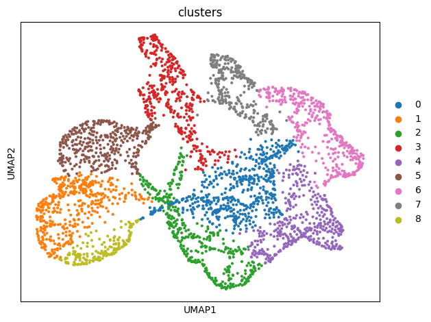
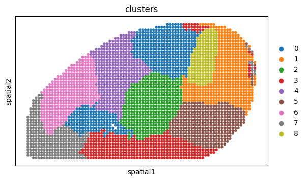

Tutorial 3: SpaCon for mouse spatial transcriptomics and widefield functional connectivity data
[13]:
import sys
sys.path.append("/mnt/Data16Tc/home/haichao/code/SpaCon_github/SpaCon/SpaCon/")
from scipy.sparse import coo_matrix, save_npz, load_npz
from model.utils import build_spatial_graph, build_connection_graph, neighbor_sample, model_train, model_eval, clustering
from model.Model_Pyg_SpaCon import SpaCon
# from model.r_mcluster import mclust_R
import torch.nn.functional as F
import copy
import datetime
import os
import scanpy as sc
import pandas as pd
import matplotlib.pyplot as plt
import torch
import numpy as np
from tqdm import tqdm
import pickle
import warnings
warnings.filterwarnings("ignore")
mus = 'mouse_3'
if mus == 'mouse_1': # coronal
plot_x, plot_y = 'z', 'y'
figsize = (5,5)
elif mus == 'mouse_3': # sagittal
plot_x, plot_y = 'x', 'y'
figsize = (11,5)
def set_seed(seed: int):
os.environ['PYTHONHASHSEED'] = str(seed)
random.seed(seed)
np.random.seed(seed)
torch.manual_seed(seed)
torch.cuda.manual_seed(seed)
torch.cuda.manual_seed_all(seed)
torch.backends.cudnn.deterministic = True
torch.backends.cudnn.benchmark = False
set_seed(42)
Data preprocessing
load spatial transcriptomics data
[2]:
adata = sc.read_h5ad('/mnt/Data16Tc/home/haichao/code/SpaCon/ST_FC_cluster/mouse1/data/zxw1_wide_field/zxw1_cortical_map_half_brain_match_wf_conn.h5ad') # gene expression has been normalize_total and log1p
adata
[2]:
AnnData object with n_obs × n_vars = 3372 × 1122
obs: 'x', 'y', 'wf_index'
uns: 'log1p'
obsm: 'X_spatial_2d'
build spatial graph
[3]:
# calculate the spatial graph for the adata
ST_graph_data, st_adj = build_spatial_graph(adata=adata, k_cutoff=15, model='KNN',
sec_x='y', sec_y='x', is_3d=False)
ST_graph_data
[3]:
Data(x=[3372, 1122], edge_index=[2, 53952])
load connectivity data and build connection graph
[4]:
distance_weight = True
decay_rate = 0.006
neighbor_weight1 = False
neighbor_weight1_percentage = 30
if distance_weight:
wf_FC_mouse1 = np.load('/mnt/Data16Tc/home/haichao/code/SpaCon/ST_FC_cluster/mouse1/data/zxw1_wide_field/wf_FC_mouse1_fliter_100um.npy')
coor = np.array(adata.obs[['x', 'y']])
for i in range(wf_FC_mouse1.shape[0]):
distances = np.linalg.norm(coor - coor[i], axis=1)
neighbor = np.percentile(distances, neighbor_weight1_percentage)
weight = 1/(np.exp(-decay_rate * distances))
# weight = weight/np.max(weight)
if neighbor_weight1:
weight[distances < neighbor] = 1
# weight = weight/np.max(weight)
# print(weight.max())
wf_FC_mouse1[i] = np.multiply(wf_FC_mouse1[i], weight)
# break
[5]:
def filter_matrix(mat, thr, per):
n = mat.shape[0]
k_per_row = int(per * n) # Calculate the maximum number of elements to retain per row (150)
filtered_mat = np.zeros_like(mat) # Initialize the filtered matrix
for i in range(n):
row = mat[i, :].copy() # Copy the current row to avoid modifying the original matrix
# Step 1: Retain elements greater than 0.7
mask = row > thr
valid_indices = np.where(mask)[0]
if len(valid_indices) == 0:
continue # No matching elements, skip
# Step 2: Sort in descending order by value and select the top k elements
valid_values = row[valid_indices]
sorted_indices = np.argsort(-valid_values) # Indices for descending sort
k = min(k_per_row, len(sorted_indices))
selected = sorted_indices[:k]
selected_indices = valid_indices[selected]
# Update the filtered matrix
filtered_mat[i, selected_indices] = row[selected_indices]
# Optional step: Maintain matrix symmetry
# filtered_mat = np.maximum(filtered_mat, filtered_mat.T)
return filtered_mat
thr = 0.8
max_retention_each_row = 0.1
wf_FC_mouse1 = filter_matrix(wf_FC_mouse1, thr=thr, per=max_retention_each_row)
# for i in range(wf_FC_mouse1.shape[0]):
# wf_FC_mouse1[i,i] = 2
[6]:
wf_FC_mouse1[wf_FC_mouse1 < thr] = 0
count_after = np.count_nonzero(wf_FC_mouse1)
proportion_after = count_after/(wf_FC_mouse1.shape[0]*wf_FC_mouse1.shape[1])
print(proportion_after)
0.08214357580183748
[7]:
NT_graph_data = build_connection_graph(adata, wf_FC_mouse1, threshold=thr)
NT_graph_data
[7]:
Data(x=[3372, 1122], edge_index=[2, 934013])
[8]:
train_loader, evaluate_loader_con, evaluate_loader_spa = neighbor_sample(NT_graph_data, ST_graph_data, batch_size=64, train_num_neighbors=[20, 10, 10], num_workers=4)
[10]:
device = torch.device('cuda:0' if torch.cuda.is_available() else 'cpu')
# hyper-parameters
num_epoch = 10
lr = 0.0001
weight_decay = 1e-4
hidden_dims = [adata.X.shape[1]] + [256, 64, 16]
# model
model = SpaCon(hidden_dims=hidden_dims, fusion_method='concat').to(device)
# if model_save_path=None, the model will not be saved
results_save_path = f"./results_widefield/{str(datetime.datetime.now().strftime('%Y_%m_%d_%H_%M_%S'))}/"
os.makedirs(results_save_path, exist_ok=True)
model = model_train(num_epoch, lr, weight_decay, model, train_loader, st_adj, model_save_path=results_save_path, device=device)
epoch:1|10
0%| | 0/53 [00:00<?, ?it/s]100%|██████████| 53/53 [00:02<00:00, 26.02it/s]
epoch:2|10
100%|██████████| 53/53 [00:01<00:00, 30.17it/s]
epoch:3|10
100%|██████████| 53/53 [00:01<00:00, 32.53it/s]
epoch:4|10
100%|██████████| 53/53 [00:01<00:00, 32.37it/s]
epoch:5|10
100%|██████████| 53/53 [00:01<00:00, 33.66it/s]
epoch:6|10
100%|██████████| 53/53 [00:01<00:00, 32.20it/s]
epoch:7|10
100%|██████████| 53/53 [00:01<00:00, 35.19it/s]
epoch:8|10
100%|██████████| 53/53 [00:01<00:00, 33.37it/s]
epoch:9|10
100%|██████████| 53/53 [00:01<00:00, 33.26it/s]
epoch:10|10
100%|██████████| 53/53 [00:01<00:00, 32.11it/s]
Training completed! The model parameters have been saved to ./results_widefield/2025_07_11_15_56_15//model_params.pth
[11]:
adata = model_eval(model, adata, NT_graph_data, ST_graph_data, evaluate_loader_con, evaluate_loader_spa, st_adj, layer_eval=True, device=device)
Evaluating: 100%|██████████| 10116/10116 [00:01<00:00, 5363.94it/s]
Evaluating: 100%|██████████| 10116/10116 [00:01<00:00, 7124.43it/s]
The results have been saved in adata.obsm
AnnData object with n_obs × n_vars = 3372 × 1122
obs: 'x', 'y', 'wf_index'
uns: 'log1p'
obsm: 'X_spatial_2d', 'feature_spa', 'feature_con'
[17]:
adata = clustering(adata, alpha=1, adata_save_path=results_save_path, cluster_resolution=0.25,
plot_all_cluster_results=False, figsize=figsize, plot_x=plot_x, plot_y=plot_y)
The clustering results have been saved in ./results_widefield/2025_07_11_15_56_15//feature_add_weight1/Clusters_res0.25/
AnnData object with n_obs × n_vars = 3372 × 1122
obs: 'x', 'y', 'wf_index', 'clusters'
uns: 'log1p', 'neighbors', 'umap', 'louvain', 'clusters_colors'
obsm: 'X_spatial_2d', 'feature_spa', 'feature_con', 'feature_add', 'X_umap', 'spatial'
obsp: 'distances', 'connectivities'

[18]:
adata.obsm['spatial'] = adata.obs[['y', 'x']].values
sc.pl.spatial(adata, color='clusters', spot_size=1, show=False)
[18]:
[<Axes: title={'center': 'clusters'}, xlabel='spatial1', ylabel='spatial2'>]

[ ]:
for c in adata.obs['clusters'].unique():
temp_adata = adata[adata.obs['clusters'] == c]
plt.figure(figsize=(4,6))
plt.scatter(adata.obs['x'].values, adata.obs['y'].values, c='#d3d3d3', s=10)
plt.scatter(temp_adata.obs['x'].values, temp_adata.obs['y'].values, c='#FF8C00', s=10)
# plt.savefig(f'{path}/{c}.png')
plt.show()
[ ]: